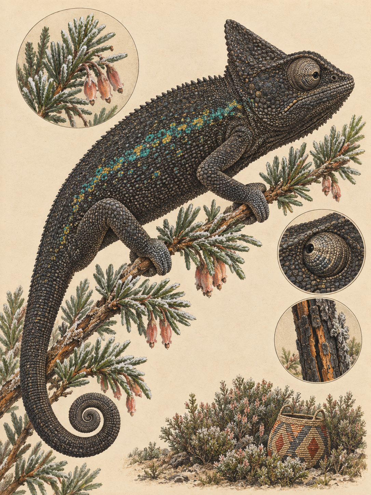

LAIKIPIA / MOUNT KENYA
Trioceros schubotzi
Swahili: „Kinyonga“; Kikuyu: „kĩĩmbu“, „mũriyũ“

Kurz vor Sonnenaufgang sitzt ein kleines Chamäleon schwarz auf einem frostigen Zweig am Mount Kenya. Das Schwarz ist kein Zeichen von Schreck. Es ist eine Aufwärmphase aus Haut. Zwischen Nachtfrost und erster Jagd liegt nur ein kurzes Zeitfenster. Die Höhenlage prägt den Tageslauf. Das Klima dort lautet: „Sommer am Tag, Winter in der Nacht.“ Die klaren Morgenstunden nach einer Frostnacht sind die kurze Zeit, in der das Tier offen im Geäst sitzen und aktiv werden kann, bevor Wolken oder kalter Regen den Körper wieder abkühlen und die Jagd endet.
Das Mount-Kenya-Seitenstreifenchamäleon lebt ausschließlich im Mount Kenya Nationalpark, in der afroalpinen Moorland- und Baumheidezone zwischen 3.000 und 4.200 Metern Höhe. Dort bringt der Tag starkes ultraviolettes Licht, während die Nacht Frost bringt. Ein Männchen erreicht bis zu 130 Millimeter Gesamtlänge, ein Weibchen besitzt eine Kopf-Rumpf-Länge von ungefähr 49 Millimetern. Bei ausgewachsenen Männchen leuchten türkisblaue und gelbe Seitenstreifen, Weibchen sind schlichter gefärbt. Die Haut trägt körnige Schuppen und gekielte Erhebungen. Hinter dem Kopf steht ein dreieckiger Helm, dazu kommen Rücken- und Kehlkämme. Drei Stirnhörner besitzt diese Art nicht. Ihr Gewicht ist nicht dokumentiert. Die Jungtiere zeigen die Seitenstreifen und die Erwachsenenfärbung erst später.
Trotzdem trägt sie einen Namen, der von Hörnern spricht. Die Gattung Trioceros geht auf griechische Wörter für „drei“ und „Horn“ zurück und bezeichnet den Gattungstypus, nicht das Aussehen dieser Art. Das Artepitheton schubotzi ehrt den deutschen Zoologen Johann G. Schubotz. Richard Sternfeld beschrieb das Tier 1912 zunächst als Chamaeleon schubotzi. Erst die genetische Neuklassifizierung der afrikanischen Chamäleons erhob 2009 die Untergattung Trioceros zur Gattung. 2020 wurde außerdem ein früherer Lectotypus korrigiert. Auf dem Berg entscheidet aber eine unmittelbarere Frage über Leben und Tod: Wie wird ein Körper warm, der in der Nacht fast am Gefrierpunkt liegt?
Der Körper eines Chamäleons besteht zu mehr als 90 Prozent aus Wasser. Die Gewebeflüssigkeit enthält ungefähr 0,9 Prozent Salz. Dadurch sinkt ihr Gefrierpunkt auf etwa minus 2 bis minus 4 Grad Celsius. Fällt die Gewebetemperatur darunter, bilden sich Eiskristalle, die Zellmembranen durchtrennen. Beim Auftauen wird das Gewebe weiter zerstört. Antifreeze-Proteine besitzt das Chamäleon nicht. Die Kältestarre des kleinen Tieres ist deshalb eine schmale Pause in dieser Höhe, in der das Körperwasser flüssig bleiben muss. Frost ist hier keine Jahreszeit, sondern eine Grenze.
Mit den ersten Lichtreizen setzt eine gesicherte Kausalkette ein. Das zentrale Nervensystem verteilt Melanin, ein schwarzes Pigment, in den Ausläufern oberflächennaher Farbzellen. Die anderen Farbzellen werden überdeckt, und die Haut wird tiefschwarz. Schwarze Haut reflektiert wenig Licht und nimmt mehr Strahlung auf. Besonders wichtig ist das nahe Infrarot, ein für Menschen unsichtbarer Teil des Sonnenlichts. Die absorbierte Strahlung wird in Körperwärme verwandelt. Bereits bei 5 Grad Celsius sind Zungenschüsse zur Nahrungsaufnahme möglich. Sobald die Betriebstemperatur erreicht ist, zieht sich das Melanin zurück und die Tarnfärbung kehrt wieder.
Bei Chamäleons dient der Farbwechsel primär der sozialen Kommunikation. Für die frühmorgendliche Schwarzfärbung dieser Hochlandart ist zusätzlich eine thermoregulatorische Funktion nachgewiesen. Die Art ist tagaktiv und sitzt nach einer Frostnacht offen im Geäst. In der Zeit vom 24. September bis zum 12. Oktober fällt das Ende der langen Trockenzeit mit dem Beginn der kleinen Regenzeit zusammen. Wenn Wolken, Regen oder kalter Nebel einsetzen, sinkt die Körpertemperatur ohne direkte Infrarotstrahlung schnell. Dann zieht sich das Tier ins Strauchwerk der Baumheide, Erica, zurück. Die feuchtere Zeit bringt zwar mehr Insekten, aber am Vormittag kann sich das Wetter rasch wieder schließen. Ohne direkte Strahlung wird aus der Aufwärmfläche schnell wieder ein kalter Ast.
Die Jagd sieht beinahe unbeweglich aus. Das Chamäleon wartet als Lauerjäger auf Gliederfüßer, Regenwürmer und Nacktschnecken. Pflanzliche Nahrung ist nicht dokumentiert. Ein Insekt nähert sich, und plötzlich schnellt die Zunge vor. Erst wenn die Temperatur steigt, beginnt diese Jagd. Auch die Fortpflanzung trägt die Höhe in sich. Das Tier ist ovovivipar, also lebendgebärend: Das Weibchen behält die Eier im Körper und wird beim Sonnenbaden zum beweglichen Brutraum. Im gefrorenen Boden würden abgelegte Eier erfrieren. Die Art lebt solitär und verteidigt ihr Gebiet mit Körperabflachung und Farbwechsel. Jungtiere sind kleiner und zunächst weniger deutlich gemustert. Die Seitenstreifen und die Färbung der Erwachsenen entwickeln sich erst mit der Geschlechtsreife. Ihr Überleben hängt deshalb auch von der Dichte der Insekten ab. Als möglicher Räuber kommt am Mount Kenya die endemische Buschviper Atheris desaixi in Betracht.
Die ersten Tiere wurden 1907 und 1908 während der Deutschen Zentral-Afrika-Expedition auf etwa 4.000 Metern gesammelt. 1982 veröffentlichte Stephen M. Reilly ökologische Notizen zu dieser Hochlandart. Heute ist ihr Vorkommensgebiet mit ungefähr 130 Quadratkilometern bekannt, und die IUCN führt sie als potenziell gefährdet. Brände zerstören Heidevegetation. Der Klimawandel zwingt die kälteangepasste Art außerdem, weiter bergauf zu wandern, obwohl der Lebensraum bereits klein ist. Eine Gesamtlänge erwachsener Weibchen von etwa 100 Millimetern wird aus typischen Proportionen der Gattung vermutet. Auch Vögel und Schlangen können Chamäleons generell erbeuten. Der Berg lässt ihr also nicht nur eine kalte Nacht, sondern auch wenig Ausweichraum.
Am Morgen bleibt auf dem Mount Kenya wenig Zeit zwischen Frost und Wolke. Ein schwarzes Chamäleon sitzt auf seinem Zweig, nimmt Infrarot auf und wartet, bis die Zunge wieder schießen kann. Dann wird aus dem dunklen Körper wieder ein Tier, das im Geäst verschwindet. Die Wärme kommt, die Zunge folgt, und nach der kalten Nacht beginnt die Jagd im Geäst.
In der Überlieferung der Kikuyu wurde das Chamäleon zum ersten Boten Ngais bestimmt. Es sollte den Menschen sagen, dass sie nach dem Tod wieder auferstehen würden. Doch das Tier ging langsam, hielt an und fraß Insekten. Ngai schickte daraufhin einen zweiten Boten, je nach Fassung einen Webervogel oder eine Eidechse. Dieser erreichte die Menschen zuerst und verkündete, dass sie endgültig sterben müssten. Als das Chamäleon mit der Botschaft vom ewigen Leben eintraf, war die erste Nachricht bereits angenommen. Diese Geschichte ist überliefert, keine biologische Erklärung.
Aus dieser Überlieferung entstand die Vorstellung, Chamäleons könnten Unglück bringen. In Konfliktsituationen werden sie deshalb von Teilen der lokalen Bevölkerung gemieden oder getötet. Für Trioceros schubotzi selbst sind keine belegten Nutzungen als Nahrung oder Medizin bekannt. Sein heutiger Schutz hängt vor allem am Lebensraum: Die Art steht als potenziell gefährdet auf der IUCN-Liste, ihr internationales Handelsgeschehen fällt unter CITES-Anhang II. Ihre genaue Bestandszahl ist unbekannt. Brände in der Moorlandzone und der durch den Klimawandel schrumpfende Lebensraum machen die kleinen Hochlandflächen zu einem empfindlichen Rückzugsort.
Wo und wann: Von Nanyuki aus über die Sirimon Route bis zum Old Moses Camp und weiter in die Erica-Zone. Zwischen 06:15 und 08:30 Uhr auf die ersten Sonnenstrahlen warten, wenn das Tier offen im Geäst schwarz wird und sich aufwärmt. Den eigenen Schatten nicht auf den Zweig fallen lassen.
Brennweite: 100 bis 400 mm an der Naheinstellgrenze oder 150 bis 600 mm aus 2 bis 3 Metern Abstand. Für einen sitzenden Körper reichen 1/250 Sekunde, für den Zungenschuss 1/2000 bis 1/4000 Sekunde.
Bild-Idee: Das schwarze Chamäleon auf dem frostigen Erica-Zweig im Morgenlicht zeigen, sodass die körnige Haut, der dreieckige Helm und ein erster Zungenschuss die Heizgeschichte sichtbar machen.